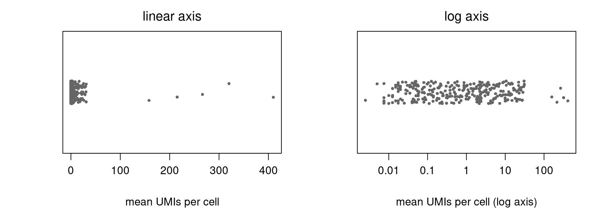

Single-cell analysis — Log and pseudolog transforms
Quantitative biology and integrative omics
About this lecture
In Single-cell RNA-seq: data & QC the last preprocessing step was one line: log1p. This unit is about that line: why we transform counts at all, what the log does to the numbers, and what the “+1” quietly changes.
Why transform: expression spans orders of magnitude, changes are fold changes, and the variance of a count grows with its mean.
Log: turns fold changes into differences. It is nonlinear, which has consequences.
Pseudolog\(\log(1 + x)\): the log with a pseudocount, so that zeros survive. The pseudocount is a choice.
Plotting: a log axis is not the same as plotting log values.
All data today are simulated counts: 400 cells (200 T cells, 200 B cells), 300 genes.
Expression spans orders of magnitude

One point per gene: its mean UMI count per cell. The means run from 0.003 to 410 UMIs per cell, a ratio of about 160,000.
On a linear axis almost every gene sits at “0”, and 5 genes (ribosomal-like) carry 54% of all UMIs.
On a log axis each factor of 10 gets the same space, and the genes spread out.
Biology works in ratios too: a transcription factor at 0.5 UMIs per cell going to 1 is as much a doubling as a ribosomal gene going from 200 to 400.
Count variance grows with the mean
Left: for counts, variance ≥ mean (Poisson: variance = mean; negative binomial: more). The 5 very high genes have variances of 6,900–50,000; the cell-type markers only 7.5–10.
Right: after log1p, the markers (green) have the largest variance (1.75–1.95); the very high genes drop to 0.17–0.20.
The log does not make variance perfectly constant (genes near 0 stay low), but it stops size from deciding what looks variable.
Raw counts: PCA sees a few genes
Normalized counts: the 5 very high genes contribute 92% of the total variance. PC1 is their noise; T and B cells overlap.
After log1p: they contribute 0.5%. PC1 is made of the 15 marker genes and splits the two cell types.
Same cells, same genes, same PCA. Only the transform changed.
Log turns fold changes into differences
The one rule that makes logs useful:
\[\log(a \cdot b) = \log a + \log b, \qquad \log\frac{a}{b} = \log a - \log b\]
So a fold change (a ratio) becomes a difference of logs. With base 2:
Control
Treated
Fold change
\(\log_2\) fold change
50
200
4
\(\log_2 200 - \log_2 50 = 2\)
40
10
0.25
\(-2\)
100
150
1.5
0.58
\(\log_2\) FC = 1 means doubling, \(-1\) halving, 0 no change. Up and down are now symmetric: 4× up is \(+2\), 4× down is \(-2\).
The base only rescales: \(\log_{10} x = \log_2 x / \log_2 10\). R’s log() is natural log; log1p() too.
Log is not linear
The linear test from Polar coordinates: \(f\) is linear if \(f(a + b) = f(a) + f(b)\) and \(f(c\,a) = c\,f(a)\). The log fails both:
The log turns products into sums, not sums into sums. Scaling by \(c\) becomes adding\(\log c\).
So there is no matrix for it, and the order of operations matters: anything linear (summing counts, averaging, library-size scaling, compensation in flow cytometry) must be done before the log, on the original scale.
Average, then log ≠ log, then average
Four cells of one cluster, counts for one gene: \(0, 1, 3, 15\).
\(\log_2(1 + x)\) per cell
Average
Log, then average
\(0, 1, 2, 4\)
1.75
Average, then log
mean count \(= 4.75\)
\(\log_2(5.75) =\)2.52
The mean of logs is always ≤ the log of the mean (equal only if all values are the same). Big values count less after the log.
Pseudobulk: add up the raw counts of all cells in a cluster per sample, then normalize and log. Do not average the log1p values and call that the expression of the cluster.
A fold change of mean log values is not the log of the fold change of means. Know which one a tool reports.
The zero problem, and the pseudolog
Half the entries in our matrix are 0 (real datasets: 90% or more), and \(\log 0 = -\infty\).
The fix: add a pseudocount\(c\) before taking the log. With \(c = 1\) this is the pseudolog:
\[\text{pseudolog}(x) = \log(1 + x)\]
In R: log1p(x).
\(0 \mapsto 0\): zeros stay zeros, so the matrix stays sparse.
For large \(x\), \(\log(1 + x) \approx \log x\): the +1 does not matter.
For small \(x\) it matters a lot: \(\log(1 + x) \approx x\), the transform is almost linear near 0.
In general, \(\log(x + c)\) with any pseudocount \(c > 0\). Our 0, 1, 3, 15 example used \(c = 1\) in base 2.
So in raw counts, the pseudocount is \(n / 10{,}000\), and it differs per cell:
UMIs in the cell, \(n\)
1,000
5,000
20,000
effective pseudocount
0.1
0.5
2
log1p value of 1 UMI
2.40
1.10
0.41
Changing the scale factor (10,000 vs \(10^6\) for CPM) changes the pseudocount. Ahlmann-Eltze & Huber (2023, Nature Methods 20:665) show the pseudocount acts like an assumed overdispersion\(\alpha\), with \(c \approx 1/(4\alpha)\): 10,000 is a reasonable choice for typical droplet data; CPM (\(10^6\)) is not.
Log axis, or log values?
scale_y_log10() takes the log of 0, which is \(-\infty\): the boxplot drops the zeros, with only a console warning. 161 of 200 B cells are 0, so the true median is 0; the log-axis boxplot shows 3.82.
Plotting log1p(expr) keeps every cell; the axis can still be labelled in counts (code on the next slide).
The whole transform in R
# X: cells x genes matrix of raw UMI countsn <-rowSums(X) # library size per cellN <- X / n *10000# library-size normalize (linear: do it first)L <-log1p(N) # pseudolog, natural logpc <-prcomp(L) # PCA on log values (after selecting HVGs)# pseudobulk: sum RAW counts per cluster, then normalize and logpb <-rowsum(X, cluster) # one row per clusterlog1p(pb /rowSums(pb) *1e6)# log2 fold change with an explicit pseudocountlfc <-log2((mean_B +1) / (mean_A +1))# plot log1p values, label the axis in countsggplot(d, aes(type, log1p(expr))) +geom_boxplot() +scale_y_continuous(breaks =log1p(c(0, 1, 3, 10, 30, 100)), labels =c(0, 1, 3, 10, 30, 100))
Every number on the slides comes from this recipe applied to the simulated data (make-log-figs.R).
Summary
Concept
Key fact
R
Why transform
expression spans orders of magnitude; variance grows with the mean
apply(X, 2, var)
Log
fold changes become differences; \(\log_2\) FC 1 = doubling
log2(b / a)
Not linear
\(\log(a + b) \ne \log a + \log b\); scaling becomes a shift
—
Order matters
sum, average, normalize on counts; log last
rowsum(), then log1p()
Pseudolog
\(\log(1 + x)\): 0 stays 0, ≈ \(x\) near 0, ≈ \(\log x\) for large \(x\)
log1p(x)
Pseudocount \(c\)
small \(c\) blows up low-count noise; large \(c\) squashes fold changes
log(x + c)
Scale factor
pseudocount in counts is \(n / 10{,}000\) per cell